批次將不同資料夾中的word檔案轉換成pdf檔
本文說明如何把好幾個分散在不同資料夾的word檔案同時轉換成pdf檔，而且這些pdf檔案都要放在跟原本的word檔同一個地方。
把word檔案轉成pdf檔案有兩種方式，一種是用word內建的另存成pdf檔案（Word 2003要另外下載擴充功能），另一種是用Adobe Acrobat的PDFMaker。前者在轉換上比較穩定，後者比較不穩定，有時候會出現錯誤。
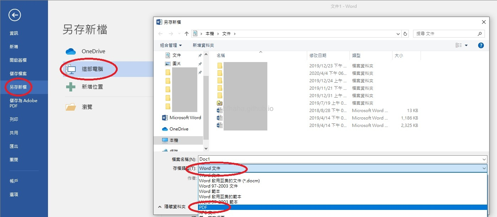
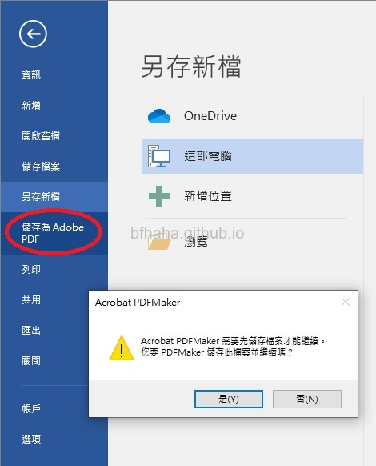
如果用第一個方法把一些檔案存成pdf檔，就要把word檔一個一個打開，並另存成pdf檔，缺點就是要人工操作，檔案多時很耗時間。而這裡介紹的方法是基於第二種，雖然是自動化，但缺點剛剛講過了，有時候轉換一些檔案會出錯，反而會花更多時間處理。
如果讀者電腦有安裝Adobe Acrobat，那相信讀者都已經知道怎麼把一個word檔案（xxx.docx或是xxx.doc）轉換成pdf檔。就是在該word檔案上按右鍵，在出現的選單上選擇[轉換為 Adobe PDF]。
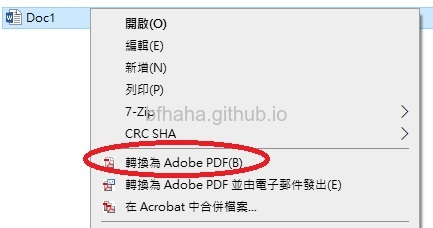
如果是要轉換好幾個word檔案，可以利用檔案搜尋，輸入*.doc，搜尋你要轉換的所有word檔案，（注意，windows 7的搜尋功能有問題，沒辦法完整地搜尋出正確的檔案，）然後將這些word檔全選，按右鍵，選擇[轉換為 Adobe PDF]。但是這樣會有兩個效率上的問題，一個是轉換完成後會顯示pdf檔案，另一個是會問你要儲存到哪裡，這都會拖累轉換速度。下面說明該如何設定轉換完後不要顯示pdf檔，並且自動儲存到跟word檔案一樣的地方。
- 到[控制台]（[開始]，[執行]，輸入control），[印表機]，在[Adobe PDF]這台虛擬印表機上按右鍵，選擇[列印喜好設定]。
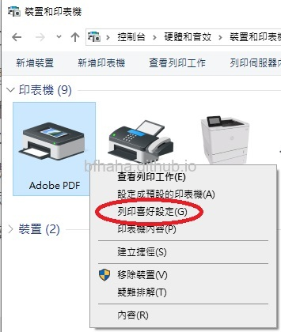
- 如果不要顯示轉換完成的pdf，就取消勾選[檢視Adobe PDF結果]。
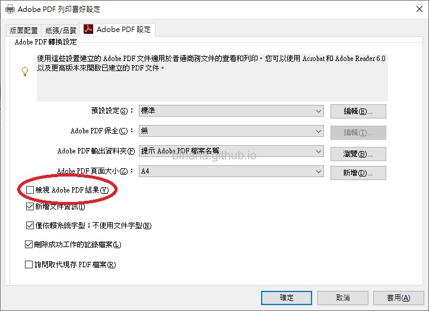
- [Adobe PDF 輸出資料夾]這個預設是[提示 Adobe PDF 檔案名稱]，也就是會問你要儲存到哪裡，另一個選項是儲存到Documents資料夾，也可以按[瀏覽]選擇你要儲存的資料夾。但如果我又不想提示，又想儲存到跟word檔一樣的資料夾怎麼辦呢，理論上應該在這個欄位輸入*.pdf，但這個欄位沒辦法自行輸入，這就有點麻煩了，我們需要修改登錄檔。
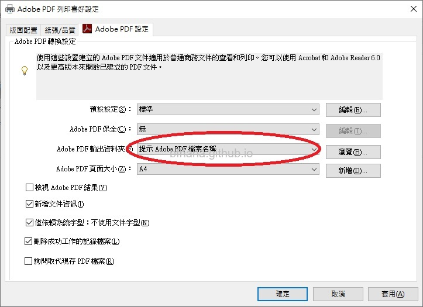
- 你可以先按[瀏覽]，選擇一個儲存的資料夾，這個資料夾最好自訂特殊一點的名稱，例如abcdefg。
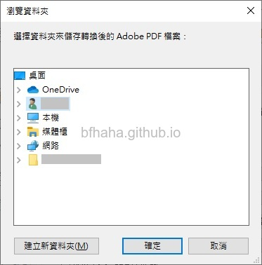
- 按[開始]，[執行]，輸入regedit，開啟[登錄編輯程式]，搜尋剛剛你取的資料夾名稱，abcdefg。（理論上會是在HKEY_CURRENT_USER\Software\Adobe\Acrobat Distiller\11.0\AdobePDFOutputFolder）
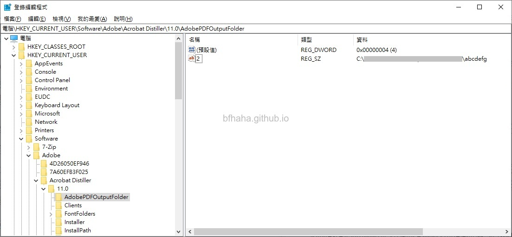
- 找到後就表示這個Adobe PDF 輸出資料夾的選項是放在這裡的，按右鍵新增一個[字串值]，字串名稱輸入3（原本的abcdefg是2，我這裡就繼續接下去，你的可能會不一樣），然後點兩下可以編輯字串的數值資料，輸入*.pdf
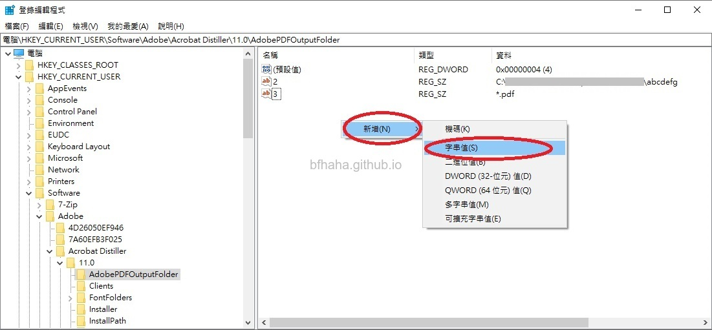
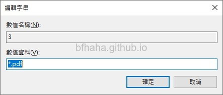
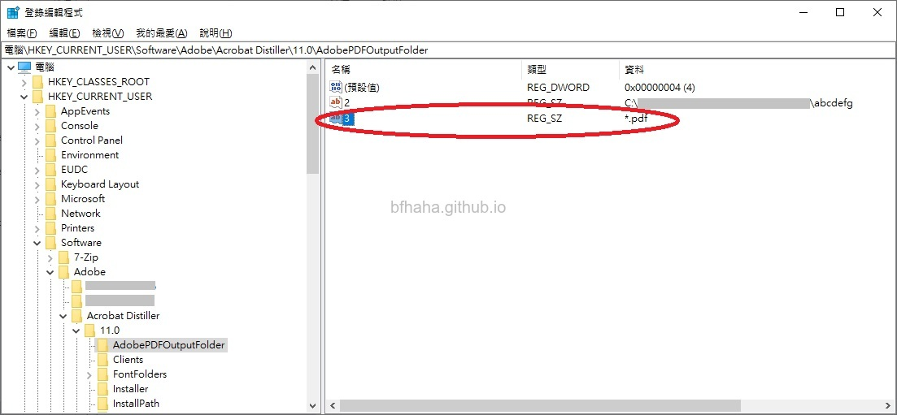
- 於是Adobe PDF輸出資料夾就多了*.pdf的選項可以選擇。
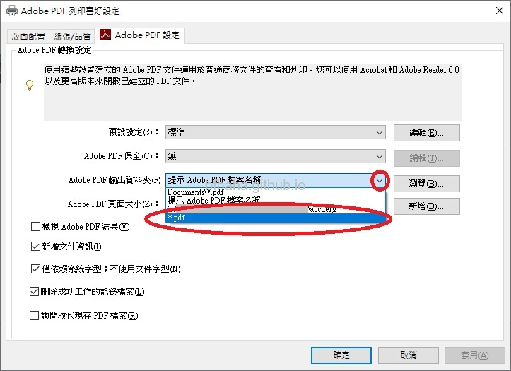
- 於是之後將word轉換成pdf檔案時就不會開啟轉換後的pdf檔，也不會詢問要儲存在哪，會直接儲存在跟word檔同一個地方。
- 注意，有時候如果是把超過A4大小的word檔轉換成A4（特別是中小學學校的考卷檔案），那建議要確認[Adeobe PDF頁面大小]設定為A4。